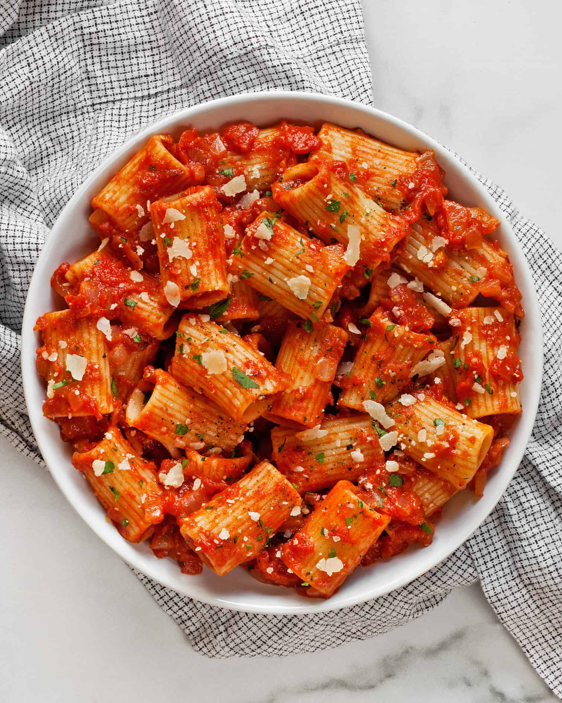

Will's Spicy Pasta

The Most Bomb Store Bought Delight
I started making this delectable dish for my wife to have her get used to
spicy food in it's mildest form. Turns out it was a huge hit and now my
family always requests it when we get together.
Ingredients(serves 4)
- 1-pk x Johnsonville Hot Italian Sausage
- 1-32oz jar x Rao's Homemade Arrabbiata Sauce
- 8oz - Red Cabernet Sauvignon(I prefer Rodney Strong vintage)
- 2 x Garlic Cloves
- 1 x box Rigatoni
- 1/2 cup x Arugula
- Garlic Salt
- Black Pepper
- Salt
- Olive Oil
- Parmesan or Mozzarella cheese for serving
Steps
- Pour glasss of that red you got for a cooking buddy
- Place pan on stove until warm then add the olive oil
- Mince garlic cloves
- Brown Sausages in med heat skillet turning every few minutes until no longer red on inside
- Add Rao's Homemade, 80z red wine, minced cloves,garlic salt black pepper,
and arugula to saucepot. Set on low heat to bubble(noramlly about 45 mins)
- Chop each sausage into 5 pieces add to sauce pot
- Add water and salt to pot. Boil water and cook pasta al dente(means firm to bite btw)
- Pasta sauce should be visibly darker if ready. If so bring to very low heat or warm setting
- Serve in bowls and grate cheese over the top for a banger dinner
Back to the Recipes